利用JIT加速计算 ETF 期权隐含波动率和希腊值
期权的隐含波动率可以反应市场对未来的预期，通常使用牛顿法和二分法来计算。这两种方法都需要频繁迭代，且迭代次数不能确定，核心代码无法向量化，因此只能通过循环来逼近求解。这就导致在期权相关计算中，隐含波动率往往容易成为性能的瓶颈。
DolphinDB 的计算逻辑使用脚本语言编写，但底层调用的是 C++ 代码，存在脚本解释的过程。为了提高脚本的执行效率，DolphinDB 从1.01版本开始支持即时编译（JIT）功能，特别适合于无法使用向量化运算但又对运行速度有极高要求的场景。
本教程将基于客户的实际需求，以二分法计算 ETF 期权的隐含波动率及希腊值为例，为大家示范如何使用 DolphinDB 的 JIT 功能给计算过程加速，并与 C++ 原生代码进行了计算性能对比测试，结果表明 DolphinDB 脚本计算耗时为 C++ 原生代码的1.5倍。
数据表结构
期权日频数据表
| 字段 | 字段类型 | 含义 |
|---|---|---|
| tradedate | DATE | 交易日期 |
| sym | SYMBOL | 标的代码 |
| codes | SYMBOL | 期权合约代码 |
| closeprice | DOUBLE | 日收盘价格 |
| etf | SYMBOL | 期权合成价格的两个合约代码 |
| etfprice | DOUBLE | 期权合成价格 |
注意： 字符串字段使用 SYMBOL 类型和 STRING 类型存储的差异。
期权日频数据表在 DolphinDB 中存储时，建议在时间维度按年分区即可，创建库表的代码如下：
login("admin", "123456")
dbName = "dfs://optionPrice"
tbName = "optionPrice"
if(existsDatabase(dbName)){
dropDatabase(dbName)
}
db = database(dbName, RANGE, date(datetimeAdd(2000.01M,0..50*12,'M')))
colNames = `tradedate`sym`codes`closeprice`etf`etfprice
colTypes = [DATE, SYMBOL, SYMBOL, DOUBLE, SYMBOL, DOUBLE]
schemaTable = table(1:0, colNames, colTypes)
db.createPartitionedTable(table=schemaTable, tableName=tbName, partitionColumns=`tradedate)读取 50 ETF 日频数据，代码如下：
data = select * from loadTable("dfs://optionPrice", "optionPrice") where sym =`510050data 是表变量，具体数据内容如下图所示：
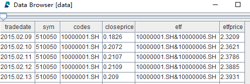通过panel函数对 data 进行透视操作，将窄表数据展成矩阵，生成期权日收盘价矩阵，代码如下：
closPriceWideMatrix = panel(data.codes, data.tradeDate, data.closePrice)closPriceWideMatrix 是矩阵变量，具体数据内容如下图所示：
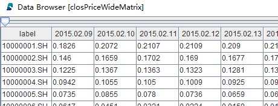通过panel函数对 data 进行透视操作，将窄表数据展成矩阵，生成期权合成价格矩阵，代码如下：
etfPriceWideMatrix = panel(data.codes, data.tradeDate, data.etfprice)etfPriceWideMatrix 是矩阵变量，具体数据内容如下图所示：
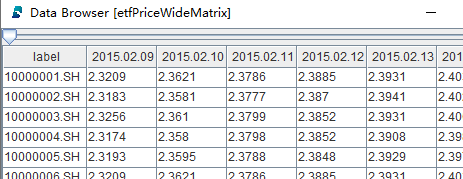期权信息
| 字段 | 字段类型 | 含义 |
|---|---|---|
| code | STRING | 期权合约代码 |
| name | STRING | 期权合约名称 |
| exemode | INT | 期权类型（认购认沽类型） |
| exeprice | DOUBLE | 行权价 |
| startdate | DATE | 开始日期 |
| lastdate | DATE | 结束日期 |
| sym | SYMBOL | 标的代码 |
| exeratio | DOUBLE | 乘数 |
| exeprice2 | DOUBLE | 分红后的行权价 |
| dividenddate | DATE | 分红日 |
| tradecode | STRING | 交易代码 |
期权信息数据在 DolphinDB 中存储时，建议在证券代码维度按值分区即可，创建库表的代码如下：
login("admin", "123456")
dbName = "dfs://optionInfo"
tbName = "optionInfo"
if(existsDatabase(dbName)){
dropDatabase(dbName)
}
db = database(dbName, VALUE, `510050`510300)
colNames = `code`name`exemode`exeprice`startdate`lastdate`sym`exeratio`exeprice2`dividenddate`tradecode
colTypes = [STRING, STRING, INT, DOUBLE, DATE, DATE, SYMBOL, DOUBLE, DOUBLE, DATE, STRING]
schemaTable = table(1:0, colNames, colTypes)
db.createPartitionedTable(table=schemaTable, tableName=tbName, partitionColumns=`sym)读取数据：
contractInfo = select * from loadTable("dfs://optionInfo", "optionInfo") where sym =`510050contractInfo 是表变量，具体数据内容如下图所示：
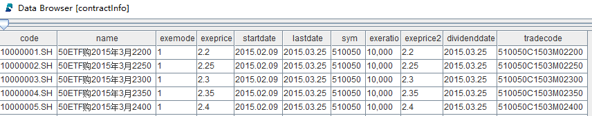交易日历
| 字段 | 字段类型 | 含义 |
|---|---|---|
| tradedate | DATE | 交易日期 |
交易日历存放在单列 csv 文件中，可以使用 DolphinDB 的loadText函数接口直接读取：
//交易日历csv文件路径
tradingDatesAbsoluteFilename = "/hdd/hdd9/tutorials/jitAccelerated/tradedate.csv"
startDate = 2015.02.01
endDate = 2022.03.01
//读取csv文件
allTradingDates = loadText(tradingDatesAbsoluteFilename)
//生成交易日向量
tradingDates = exec tradedate from allTradingDates where tradedate<endDate and tradedate >startDateallTradingDates 是表变量，可以使用 exec 函数将表中的某一列转成向量变量，tradingDates 是向量变量。
计算函数代码开发
隐含波动率
DolphinDB 脚本语言需要先解释再执行，计算密集的代码如果不能向量化，在脚本层面使用 while 和 for 循环以及条件分支，就会比较耗时。期权隐含波动率计算的步骤，由于使用了上下限值循环逼近的二分法，正是需要 JIT 加速的计算类型。以下就是二分法逼近隐含波动率的代码：
@jit
def calculateD1JIT(etfTodayPrice, KPrice, r, dayRatio, HLMean){
skRatio = etfTodayPrice / KPrice
denominator = HLMean * sqrt(dayRatio)
result = (log(skRatio) + (r + 0.5 * pow(HLMean, 2)) * dayRatio) / denominator
return result
}
@jit
def calculatePriceJIT(etfTodayPrice, KPrice , r , dayRatio , HLMean , CPMode){
testResult = 0.0
if (HLMean <= 0){
testResult = CPMode * (etfTodayPrice - KPrice)
if(testResult<0){
return 0.0
}
return testResult
}
d1 = calculateD1JIT(etfTodayPrice, KPrice, r, dayRatio, HLMean)
d2 = d1 - HLMean * sqrt(dayRatio)
price = CPMode * (etfTodayPrice * cdfNormal(0, 1, CPMode * d1) - KPrice * cdfNormal(0, 1, CPMode * d2) * exp(-r * dayRatio))
return price
}
@jit
def calculateImpvJIT(optionTodayClose, etfTodayPrice, KPrice, r, dayRatio, CPMode){
v = 0.0
high = 2.0
low = 0.0
do{
if ((high - low) <= 0.00001){
break
}
HLMean = (high + low) / 2.0
if (calculatePriceJIT(etfTodayPrice, KPrice, r, dayRatio, HLMean, CPMode) > optionTodayClose){
high = HLMean
}
else{
low = HLMean
}
}
while(true)
v = (high + low) / 2.0
return v
}
def calculateImpv(optionTodayClose, etfTodayPrice, KPrice, r, dayRatio, CPMode){
originalShape = optionTodayClose.shape()
optionTodayClose_vec = optionTodayClose.reshape()
etfTodayPrice_vec = etfTodayPrice.reshape()
KPrice_vec = KPrice.reshape()
dayRatio_vec = dayRatio.reshape()
CPMode_vec = CPMode.reshape()
impvTmp = each(calculateImpvJIT, optionTodayClose_vec, etfTodayPrice_vec, KPrice_vec, r, dayRatio_vec, CPMode_vec)
impv = impvTmp.reshape(originalShape)
return impv
}calculateImpvJIT 是计算隐含波动的核心代码，其入参 optionTodayClose, etfTodayPrice, KPrice, r, dayRatio, CPMode 都是标量对象，其调用的 calculatePriceJIT 函数和 calculateD1JIT 函数都通过 @jit 装饰器的方式封装成JIT函数，以达到加速计算的目的。
calculateImpv 是计算隐含波动的最终调用函数，其入参 optionTodayClose, etfTodayPrice, KPrice, dayRatio, CPMode 都是矩阵对象，其主要作用是把输入和输出进行矩阵和向量的转换，以适不同函数的入参和输出。在后面 delta, gamma, vega, theta 计算时，也会用到这些矩阵入参，这里以 2015年2月16日的 50ETF 为例进行展示。
-
optionTodayClose
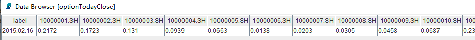
-
etfTodayPrice
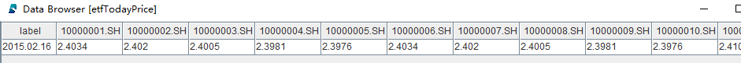
-
KPrice
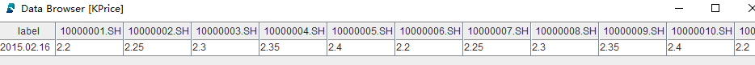
-
dayRatio
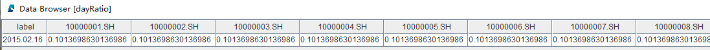
-
CPMode
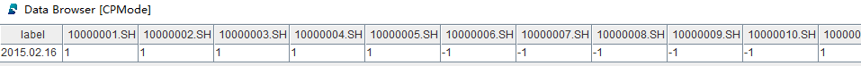
delta
delta 表示期权价格对标的资产价格的变动率，即标的资产价格每变动一个单位，期权价格产生的变化。
delta 的计算可以方便地实现向量化计算，所以不需要调用 JIT 功能，其代码如下：
def calculateD1(etfTodayPrice, KPrice, r, dayRatio, HLMean){
skRatio = etfTodayPrice / KPrice
denominator = HLMean * sqrt(dayRatio)
result = (log(skRatio) + (r + 0.5 * pow(HLMean, 2)) * dayRatio) / denominator
return result
}
def cdfNormalMatrix(mean, stdev, X){
originalShape = X.shape()
X_vec = X.reshape()
result = cdfNormal(mean, stdev, X_vec)
return result.reshape(originalShape)
}
def calculateDelta(etfTodayPrice, KPrice, r, dayRatio, impvMatrix, CPMode){
delta = iif(
impvMatrix <= 0,
0,
0.01*etfTodayPrice*CPMode*cdfNormalMatrix(0, 1, CPMode * calculateD1(etfTodayPrice, KPrice, r, dayRatio, impvMatrix))
)
return delta
}calculateDelta 是计算 delta 的最终调用函数，其入参 etfTodayPrice, KPrice, dayRatio, impvMatrix, CPMode 都是矩阵对象。
gamma
gamma 表示 delta 对于标的资产价格的变动率，即标的资产价格每变动一个单位，delta 值产生的变化。
gamma 的计算可以方便地实现向量化计算，所以不需要调用 JIT 功能，其代码如下：
def normpdf(x){
return exp(-pow(x, 2)/2.0)/sqrt(2*pi)
}
def calculateD1(etfTodayPrice, KPrice, r, dayRatio, HLMean){
skRatio = etfTodayPrice / KPrice
denominator = HLMean * sqrt(dayRatio)
result = (log(skRatio) + (r + 0.5 * pow(HLMean, 2)) * dayRatio) / denominator
return result
}
def calculateGamma(etfTodayPrice, KPrice, r, dayRatio, impvMatrix){
gamma = iif(
impvMatrix <= 0,
0,
(normpdf(calculateD1(etfTodayPrice, KPrice, r, dayRatio, impvMatrix)) \ (etfTodayPrice * impvMatrix * sqrt(dayRatio))) * pow(etfTodayPrice, 2) * 0.0001
)
return gamma
}calculateGamma 是计算 gamma 的最终调用函数，其入参 etfTodayPrice, KPrice, dayRatio, impvMatrix 都是矩阵对象。
vega
vega 表示波动率单位变动对期权价格产生的变化。
vega 的计算可以方便地实现向量化计算，所以不需要调用 JIT 功能，其代码如下：
def normpdf(x){
return exp(-pow(x, 2)/2.0)/sqrt(2*pi)
}
def calculateD1(etfTodayPrice, KPrice, r, dayRatio, HLMean){
skRatio = etfTodayPrice / KPrice
denominator = HLMean * sqrt(dayRatio)
result = (log(skRatio) + (r + 0.5 * pow(HLMean, 2)) * dayRatio) / denominator
return result
}
def calculateVega(etfTodayPrice, KPrice, r, dayRatio, impvMatrix){
vega = iif(
impvMatrix <= 0,
0,
etfTodayPrice * normpdf(calculateD1(etfTodayPrice, KPrice, r, dayRatio, impvMatrix)) * sqrt(dayRatio)
)
return vega \ 100.0
}calculateVega 是计算 vega 的最终调用函数，其入参 etfTodayPrice, KPrice, dayRatio, impvMatrix 都是矩阵对象。
theta
theta 表示时间流逝对期权价格产生的变化，即每减少一天，期权价格的变化值。
theta 的计算可以方便地实现向量化计算，所以不需要调用 JIT 功能，其代码如下：
def calculateD1(etfTodayPrice, KPrice, r, dayRatio, HLMean){
skRatio = etfTodayPrice / KPrice
denominator = HLMean * sqrt(dayRatio)
result = (log(skRatio) + (r + 0.5 * pow(HLMean, 2)) * dayRatio) / denominator
return result
}
def normpdf(x){
return exp(-pow(x, 2)/2.0)/sqrt(2*pi)
}
def cdfNormalMatrix(mean, stdev, X){
originalShape = X.shape()
X_vec = X.reshape()
result = cdfNormal(mean, stdev, X_vec)
return result.reshape(originalShape)
}
def calculateTheta(etfTodayPrice, KPrice, r, dayRatio, impvMatrix, CPMode){
annualDays = 365
d1 = calculateD1(etfTodayPrice, KPrice, r, dayRatio, impvMatrix)
d2 = d1 - impvMatrix * sqrt(dayRatio)
theta = (-etfTodayPrice * normpdf(d1) * impvMatrix \ (2 * sqrt(dayRatio)) - CPMode * r * KPrice * exp(-r * dayRatio) *cdfNormalMatrix(0, 1, CPMode * d2)) \ annualDays
result = iif(impvMatrix<= 0, 0, theta)
return result
}calculateTheta 是计算 theta 的最终调用函数，其入参 etfTodayPrice, KPrice, dayRatio, impvMatrix, CPMode 都是矩阵对象。
单日计算函数
开发完最核心的计算函数后，可以自定义一个单日计算函数，计算指定日期的隐含波动率和希腊值，其代码如下：
def calculateOneDayGreek(closPriceWideMatrix, etfPriceWideMatrix, contractInfo, targetDate){
targetDate_vec = [targetDate]
r = 0
optionTodayClose = getTargetDayOptionClose(closPriceWideMatrix, targetDate_vec)
validContractsToday = optionTodayClose.columnNames()
etfTodayPrice = getTargetDayEtfPrice(etfPriceWideMatrix, targetDate_vec)
KPrice, dayRatio, CPMode = getTargetDayContractInfo(contractInfo, validContractsToday, targetDate_vec)
impvMatrix = calculateImpv(optionTodayClose, etfTodayPrice, KPrice, r, dayRatio, CPMode)
deltaMatrix = calculateDelta(etfTodayPrice, KPrice, r, dayRatio, impvMatrix, CPMode)\(etfTodayPrice*0.01)
gammaMatrix = calculateGamma(etfTodayPrice, KPrice, r, dayRatio, impvMatrix)\(pow(etfTodayPrice, 2) * 0.0001)
vegaMatrix = calculateVega(etfTodayPrice, KPrice, r, dayRatio, impvMatrix)
thetaMatrix = calculateTheta(etfTodayPrice, KPrice, r, dayRatio, impvMatrix, CPMode)
todayTable = table(validContractsToday as optionID, impvMatrix.reshape() as impv, deltaMatrix.reshape() as delta, gammaMatrix.reshape() as gamma, vegaMatrix.reshape() as vega, thetaMatrix.reshape() as theta)
todayTable["tradingDate"] = targetDate
todayTable.reorderColumns!(["optionID", "tradingDate"])
return todayTable
}calculateOneDayGreek 的入参 closPriceWideMatrix, etfPriceWideMatrix 是矩阵对象（参考第1章节的读取数据），contractInfo 是表对象（参考第1章节的读取数据），targetDate 是标量对象。
calculateOneDayGreek 函数还调用了 getTargetDayOptionClose 函数， getTargetDayEtfPrice 函数和getTargetDayContractInfo 函数，调用的目的是从全量数据中获取计算当日的有效信息，代码如下：
/*
* 按合约和交易日在期权日频收盘价矩阵中寻找对应价格
*/
def getTargetDayOptionClose(closPriceWideMatrix, targetDate){
colNum = closPriceWideMatrix.colNames().find(targetDate)
return closPriceWideMatrix[colNum].transpose().dropna(byRow = false)
}
/*
* 按合约和交易日在期权合成期货价格矩阵中寻找对应价格
*/
def getTargetDayEtfPrice(etfPriceWideMatrix, targetDate){
colNum = etfPriceWideMatrix.colNames().find(targetDate)
return etfPriceWideMatrix[colNum].transpose().dropna(byRow = false)
}
/*
* 根据合约和交易日在期权信息表中寻找 KPrice, dayRatio, CPMode
*/
def getTargetDayContractInfo(contractInfo, validContractsToday, targetDate){
targetContractInfo = select code, exemode, exeprice, lastdate, exeprice2, dividenddate, targetDate[0] as tradingDate from contractInfo where Code in validContractsToday
KPrice = exec iif(tradingDate<dividenddate, exeprice2, exeprice) from targetContractInfo pivot by tradingDate, code
dayRatio = exec (lastdate-tradingDate)\365.0 from targetContractInfo pivot by tradingDate, Code
CPMode = exec exemode from targetContractInfo pivot by tradingDate, Code
return KPrice, dayRatio, CPMode
}calculateOneDayGreek 函数的具体使用方法会在下一章说明。
多日并行计算函数
自定义单日计算函数后，可以再自定义一个多日并行计算函数，其代码如下：
def calculateAll(closPriceWideMatrix, etfPriceWideMatrix, contractInfo, tradingDates, mutable result){
calculator = partial(calculateOneDayGreek, closPriceWideMatrix, etfPriceWideMatrix, contractInfo)
timer{
allResult = ploop(calculator, tradingDates)
}
for(oneDayResult in allResult){
append!(result, oneDayResult)
}
}calculateAll 是自定义的多日并行计算函数，主要用到了 DolphinDB
内置的partial部分应用函数和ploop并行计算函数，直接传入要并行的函数和入参，不必像其他语言一样先定义线程池/进程池。calculateAll
函数的具体使用方法会在下一章说明。
计算性能测试
测试的交易日范围从2015年2月到2022年3月，实际交易日1729天。测试的期权品种是 50 ETF，证券代码为510050，涉及期权合约共3124个。
测试环境
- CPU 类型：Intel(R) Xeon(R) Silver 4216 CPU @ 2.10GHz
- 逻辑 CPU 总数：8
- 内存：64GB
- OS：64位 CentOS Linux 7 (Core)
- DolphinDB server 版本：2.00.8 JIT
单日计算性能测试
单线程单日计算性能测试代码如下：
//定义单日性能测试函数
def testOneDayPerformance(closPriceWideMatrix, etfPriceWideMatrix, contractInfo, targetDate){
targetDate_vec = [targetDate]
r = 0
optionTodayClose = getTargetDayOptionClose(closPriceWideMatrix, targetDate_vec)
validContractsToday = optionTodayClose.columnNames()
etfTodayPrice = getTargetDayEtfPrice(etfPriceWideMatrix, targetDate_vec)
KPrice, dayRatio, CPMode = getTargetDayContractInfo(contractInfo, validContractsToday, targetDate_vec)
timer{
impvMatrix = calculateImpv(optionTodayClose, etfTodayPrice, KPrice, r, dayRatio, CPMode)
deltaMatrix = calculateDelta(etfTodayPrice, KPrice, r, dayRatio, impvMatrix, CPMode)\(etfTodayPrice*0.01)
gammaMatrix = calculateGamma(etfTodayPrice, KPrice, r, dayRatio, impvMatrix)\(pow(etfTodayPrice, 2) * 0.0001)
vegaMatrix = calculateVega(etfTodayPrice, KPrice, r, dayRatio, impvMatrix)
thetaMatrix = calculateTheta(etfTodayPrice, KPrice, r, dayRatio, impvMatrix, CPMode)
}
todayTable = table(validContractsToday as optionID, impvMatrix.reshape() as impv, deltaMatrix.reshape() as delta, gammaMatrix.reshape() as gamma, vegaMatrix.reshape() as vega, thetaMatrix.reshape() as theta)
todayTable["tradingDate"] = targetDate
todayTable.reorderColumns!(["optionID", "tradingDate"])
return todayTable
}
//执行单日性能测试函数
oneDay = testOneDayPerformance(closPriceWideMatrix, etfPriceWideMatrix, contractInfo, 2022.02.28)测试结果如下：
- 计算日期为 2022年2月28日
- 测试的期权品种是 50 ETF，涉及期权合约共136个
- DolphinDB 脚本计算总耗时为2.1 ms
- C++ 原生代码计算总耗时为1.02 ms
多日并行计算性能测试
多日并行计算性能测试代码如下：
//创建存储计算结果的表变量
result = table(
array(SYMBOL, 0) as optionID,
array(DATE, 0) as tradingDate,
array(DOUBLE, 0) as impv,
array(DOUBLE, 0) as delta,
array(DOUBLE, 0) as gamma,
array(DOUBLE, 0) as vega,
array(DOUBLE, 0) as theta
)
//执行多日并行计算函数
calculateAll(closPriceWideMatrix, etfPriceWideMatrix, contractInfo, tradingDates, result)测试结果如下：
- 计算日期为 2015年2月到2022年3月
- 测试的期权品种是 50 ETF，涉及期权合约共3124个
- 计算的并行度为8，测试环境的8个 CPU 满负荷运行
- DolphinDB 脚本计算总耗时为300 ms
- C++ 原生代码计算总耗时为200 ms
计算过程中的 CPU 使用率：
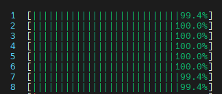总结
本教程中期权隐含波动率的计算使用了 JIT 功能提速，其余希腊值的计算使用了向量化计算。我们测试了2015年2月到2022年3月 50 ETF 所有期权合约的隐含波动率和希腊值的计算性能，在8个 CPU 满负荷运行下，DolphinDB 脚本计算总耗时为300 ms，C++ 原生代码计算总耗时为200 ms，耗时相差50%左右。
关于 DolphinDB JIT 的更多详细特性，可以参考 DolphinDB JIT教程。
通过 DolphinDB 下载连接下载 DolphinDB server 进行测试的时候，必须选择包含 JIT 功能的安装包，如下图所示：
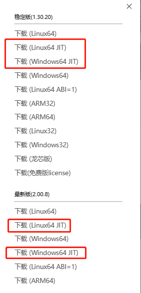